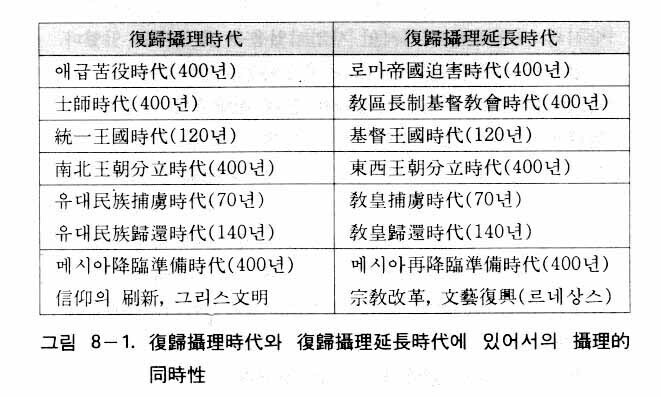
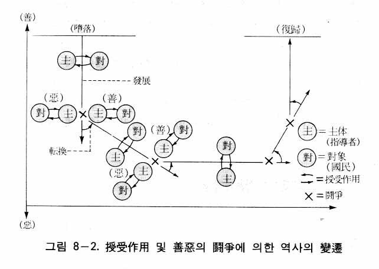
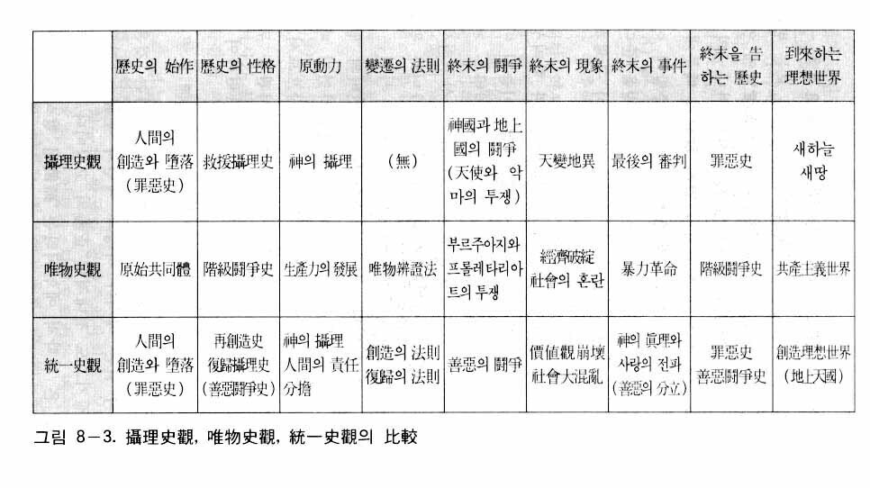

ここで扱う歴史論は、史実をそのまま記述するものではない。人類歴史はいかにして始まり、いかなる法則によって進んできて、またいかなる方向に向かって進んでいくのかなど、歴史解釈に対する見解を明らかにするものである。それは統一思想に基づいた歴史解釈をいうのであり、一つの歴史哲学である。ゆえにこの歴史論を統一歴史論または統一史観ともいう。
それでは歴史論が必要な理由は何であろうか。それは人類の未来像を確立することにより、歴史の正しい方向性を提示するためである。それによって現実問題を解決する方案が導かれるからである。言い換えれば、今日の複雑な世界の問題の根本的解決は、明確なるビジョンをもった確固たる歴史観なくしては不可能である。
今日まで多くの歴史観が学者たちによって立てられたが、共産主義の歴史観すなわち唯物史観ほど影響力のある歴史観はなかった。唯物史観は人類歴史を階級闘争の歴史であると規定する。そして資本主義社会は、ブルジョアジーとプロレタリアートの階級闘争、すなわち革命によって倒れて、必然的に共産主義社会が到来すると主張した。したがって、それなりの未来のビジョンを提示したのである。共産主義者たちにとって、唯物史観は革命を起こすための信念の原動力であった。したがって共産主義と自由主義との対決は歴史観と歴史観の対決であったといっても過言ではないのである。
しかるに自由主義世界には、唯物史観に対処しうるような既存の歴史観を見いだすことはできない。そのために自由主義世界は、その間、絶えず共産主義の攻勢と脅威に苦しめられるほかはなかった。ところがそのような唯物史観も結局、倒れてしまった。それはまさに文先生の統一歴史論のためであるといっても言いすぎではない。統一史観は新しい神観に基づいた史観であるが、今日までの数十年間、共産主義との理論的対決において唯物史観の虚構性を鋭く暴露してきたのである。そして歴史的な史実をもって、人類歴史が神の摂理により統一された創造理想世界を目指して進んできたことを実証的に解釈しているのである。
統一史観の基本的立場は、統一原理の復帰原理に基づいた立場であるが、歴史を三つの観点から説明している。第一に罪悪史として、第二に再創造歴史として、第三に復帰歴史として、歴史を見るのである。それから歴史の解釈にあたって、歴史に法則が作用してきたのかという問題や、歴史の始元や方向の問題も提起されるために、そのような問題に関してもここで扱うことにする。
罪悪史
まず統一史観が見る罪悪史について説明する。歴史は人間の堕落によって出発した罪悪史である。そのために人類歴史は原理的、正常的な歴史として出発することができず、対立と葛藤、戦争と苦痛、悲しみと惨状などでつづられる混乱の歴史になった。したがって歴史上に提起されるいろいろな問題の根本的な解決は、この堕落問題の解決なくしては不可能である。
再創造歴史
次は人類歴史が再創造歴史であるということについて説明する。人類始祖の堕落のために、人類は本然の人間と本然の世界を喪失した。したがって本然の人間は霊的な死の状態に陥った。そして本然の人間と世界は未完成のまま失われてしまった。そのため神は歴史を通じて人間を再創造し、世界を再建する摂理をなされるようになった。ゆえに摂理歴史は再創造歴史となったのである。
したがって神が初めに人間と宇宙を創造されたときの法則（創造の法則）とみ言（ロゴス）が、そのまま歴史の摂理にも適用された。神の創造はみ言で始められたから、再創造もみ言によってなされたのである。しかし再創造といっても宇宙を再び造るわけではない。堕落は人間だけの堕落であるから、再創造は人間だけの再創造である。すなわち人間だけをみ言で再創造すればよいのである。それで神は聖人、義人、預言者などの精神的指導者を立てて、彼らを通じて人々に真理（み言）を伝え、人々を霊的に導いてこられたのである。
復帰歴史
次は復帰歴史について説明する。人類始祖の堕落によって、人間は本然の世界（エデンの園）から追放され、本然の人間の姿を失い、非本然の姿または非原理的な姿になり、非原理的な世界でさまようようになった。したがって本然の世界と本然の人間は、再び回復されなければならない理想として残されたのである。
一方、神においても創造が失敗に終わらないためには、いかにしても非原理的な世界と人間を本然の状態に復帰させなければならなかった。そのために神は、人類歴史の始まりと同時に、罪悪の人間と罪悪の世界を本然の状態に復帰する摂理（復帰摂理）をなされたのである。人類歴史が復帰摂理歴史となったのはそのような理由のためである。ところで神は原理の神であり、人間の堕落は人間が一定の条件を守らないところにあったので、復帰の摂理においても、一定の法則が作用するようになった。それが復帰の法則であった。
歴史の法則性
歴史観を立てるに際して、歴史の中に法則を発見することは最も必要な条件の一つである。しかし今日まで、歴史法則を提示した宗教家や学者はほとんどいなかった。例えばキリスト教の摂理史観を見るとき、説得力のある法則は提示されなかった。そのために、キリスト教史観は今日、科学（社会科学）とは認められず、学問分野から追い出されるようになったのである。
近世に至り、ヘーゲルが歴史の説明に弁証法（観念弁証法）を適用して、人類歴史は絶対精神（理性）が弁証法的に自己自身を外部の世界に展開してきた弁証法的発展の過程であって、最後には自由が完全に実現する理性国家に到達すると主張した。ところがヘーゲルが理性国家であると考えていたプロシアは、自由が実現されないまま、歴史とともに流れてしまった。ヘーゲルのいう歴史法則は現実から遊離したものであった。また二十世紀に入って、トインビーが壮大な文明史観を打ち立て、文明の発生、成長、崩壊、解体の過程を詳細に分析したが、そこにも明確な歴史法則は提示されなかった。しかるにマルクスの唯物史観が歴史の法則を明示し、科学的な歴史観であると自称してきたのである。
統一史観は、歴史に法則が作用してきたと主張するのはもちろん、その法則に創造の法則と復帰の法則という二組の法則があることを明らかにしている。この法則こそ、実際に歴史に作用した真の法則である。そのような歴史の法則が提示されることによって、唯物史観の虚構性が如実に暴かれる。唯物史観の主張する法則とは、実は似非法則であり、独断的な主張にすぎないことが明らかになるからである。統一史観は、神学的立場でありながらも、見事に歴史法則を定立しているのであり、それによって今日まで非科学的と見なされてきた神学的歴史観も社会科学として扱われるようになるのである。
歴史の始元と方向と目標
歴史はいつ、いかにして始まったのかという歴史の始元に関しては、統一史観は人間の創造と堕落を歴史の始元と見る。これはキリスト教の摂理史観と同じ立場である。また人類の始祖に関して、一元論（monogenism）か多元論（polygenism）かという問題があるが、統一史観は人類の始祖はアダム・エバであるとする一元論を主張する。「創造は一から始まる」というのが創造原理の法則であるからである。
それから歴史の目標は高い次元における創造理想世界への復帰であり、歴史の方向はその復帰の方向である。したがって歴史の目標と方向は決定的である。しかし、いかにしてその目標に到達するかは、決定されているのではない。神の摂理のもとで人間の――特に摂理的な中心人物たちの――責任分担が果たされる時に、その時その時の摂理のみ旨が成功裡に達成されるようになるのである。したがって歴史のたどる過程が直行か迂回か、短縮か延長か、それは全く人間の努力いかんにかかっているのである。すなわち歴史の過程は非決定的であって、人間の自由意志に委ねられているのである。特に摂理的人物たちが、与えられた使命をいかに果たすかどうかにかかっているのである。これを責任分担遂行あるいはただ責任分担という。
このように目標は決定的であるが過程は非決定的であると見る立場、すなわち歴史の進行過程が人間の責任分担あるいは自由意志にかかっていると見る見解を責任分担論（theory of respohsibility, responsibilism ）と呼ぶ。
歴史の法則をもう少し具体的に見てみよう。すでに述べたように、人類歴史は再創造歴史であると同時に復帰歴史である。したがって歴史の変遷には創造の法則と復帰の法則が作用したのである。ここでまず創造の法則について説明する。創造の法則には、(1)相対性の法則、(2)授受作用の法則、(3)相克の法則、(4)中心の主管の法則、(5)三段階完成の法則、(6)六数期間の法則、(7)責任分担の法則がある。
被造物一つ一つは、内的に互いに相対関係を結んでいる二つの要素をもっている。主体的要素と対象的要素がそうである。それだけでなく、個体は外的に他の個体との間に主体と対象の相対的関係を結ぶことによって、存在し、運動する。このような関係のもとで生物は生存し、繁殖し、発展する。ここで主体と対象が相対関係を結ぶということは両者が相対することを意味する。ところで主体と対象が向かい合って対するに際して、共通目的を中心として対する時と、共通目的なしに対する時がある。ここで主体と対象が共通目的を中心として互いに向かい合って対すること、すなわち相対関係を結ぶことを特に「相対基準を造成する」という。
このように一つの個体が必ず他者と主体と対象の相対関係を結ぶという事実を「相対性の法則」という。したがって社会（歴史）が発展するための必須条件は、政治、経済、文化、科学などのすべての分野において、主体と対象の相対的要素（相対物）が相対関係を結ぶことである。このような相対関係が形成されなくては発展がなされない。主体と対象の相対的要素とは、性相と形状、陽性と陰性、主要素と従要素（主個体と従個体）のことをいう。
その例として、精神と肉体、心と体、イデオロギーと経済的条件（物質的条件）、精神的文化と物質的文明、政府と国民、経営者と労働者、労働者と生産用具、機械の主要部分と従属部分などを挙げることができる。そのような例はそれ以外にも数多くある。そしてそのような相対的要素が主体と対象の関係を結ぶことによって、政治、経済、文化、科学などのすべての領域での発展がなされるのである。
事物の内部において、主体と対象の二つの要素が相対関係を結ぶとき、一定の要素または力を授け受けする作用が起きる。主体と対象間のこのような相互作用を授受作用という。この授受作用が行われるところで発展がなされる。歴史の発展もこのような授受作用によってなされてきた。したがって歴史においても、あらゆる社会の分野で主体と対象の相対的要素（相対物）が相対関係を結んだのちに、共通目的を中心として円満な授受作用を行うときに、各分野での発展がなされたのである。
例えば国家が存在し繁栄するためには、政府と国民が国家の繁栄を目的として、主体と対象の関係を結んで円満な授受作用を行わなくてはならない。また企業の繁栄のためには、資本家、経営者、労働者、技術者、機械などが相互に主体と対象の関係をなして、円満な授受作用を行わなくてはならない。したがって「相対性の法則」と「授受作用の法則」は表裏一体の関係にあるのであり、この二つの法則を合わせて広義の「授受作用の法則」ともいう。
授受作用は調和的であり、決して対立的、相衝的ではない。ところが唯物史観は対立物の闘争によって歴史は発展すると主張する。しかし闘争は発展のための一つの契機とはなりえても、闘争が行われる間は、かえって発展は停止するか、あるいは後退するだけである。だから発展に関する限り、唯物史観の主張は全く間違いであり、階級闘争を合理化するための偽装理論にすぎなかったのである。
授受作用は主体と対象の相対的要素または相対的個体の間に行われるが、主体と主体（あるいは対象と対象）は互いに排斥し合う。このような排斥現象を相克作用という。相克作用は自然界においては、本来、潜在的なものにすぎないのであって、表面化されるものではなく、主体と対象の授受作用を強化あるいは補完する役割をもっている。
例えば自然界において、陽電気と陽電気（あるいは陰電気と陰電気）は互いに排斥し合うが、これは主体（陽電気）と対象（陰電気）の授受作用を強化、補完するための作用なのであり、それ自体としては表面化されるものではない。したがって自然界においてはこのような相克作用によって秩序が乱されることはない。
ところが人間社会における主体と主体の相克作用は、二つの指導者の間の対立として現れる。革命時における新しい指導者と過去の指導者の対立がその例である。このような相克作用において、二つの主体（保守派の主体と改革派の主体）はそれぞれの対象層（人民大衆）と授受作用を行って各自の勢力を形成し、その結果、二つの勢力が対決するようになるのである。そのとき、二つの主体（指導者）の中の、一方は神の摂理により近い立場に立っており、他方はより遠い立場に立つようになる。前者を善の側といい、後者を悪の側という。したがって社会における主体と主体の相克作用は善悪の闘争として現れる。そしてその闘争において善の側が勝利すれば、歴史の進む方向は少しずつ善の方向へ転換してゆくのである。
しかし、たとえ堕落した社会であっても、相克作用はその本来の授受作用の補完性を現す場合もなくはなかった。例えば国家と国家、または民族と民族が平和的に競争しながら、文化的、経済的に共に発展していくという場合がそうである。
主体と対象の授受作用において、主体が中心となり、対象は主体の主管を受けるようになる。その結果、対象は主体を中心として円環運動を行うようになる。自然界においては、地球が太陽を中心として回り、電子が核を中心として回るというように、物理的な円環運動が行われる。ところが人間社会における主体と対象の関係は、主体の心と対象の心の関係であるから、対象の心が主体の命令、指示、依頼などによく従うという意味での円環運動が行われるのである。
復帰歴史において、神は中心人物を立てて、彼を通じて神の摂理にかなう方向、すなわち善なる方向へ社会を導かれるのであるが、その場合、社会環境を先に造成しておいて、そののちに、中心人物をして、環境を神の摂理にかなう方向に収拾せしめられる。したがって中心人物には、常に環境を収拾（主管）すべき責任分担が与えられるのである。そのように神の摂理において、中心人物が社会環境を主管することを中心の主管の法則という。それは選民のみならず、あらゆる民族や国家の歴史においても適用される法則であった。
神は人類歴史の中心史として、旧約時代にはイスラエル民族史を、イエス以後のキリスト教を中心とした新約時代には西洋史を摂理してこられた。旧約時代のノア、アブラハム、ヤコブ、モーセ、列王、預言者たち、そして新約時代のアウグスティヌス、法王、ルター、カルヴァンなどのキリスト教の指導者や、フランク王国のカール大帝、英国のヘンリー八世、アメリカ合衆国のワシントン、リンカーンなどの政治的指導者たちも、各時代に立てられた中心人物たちであった。
一方、神の摂理を妨害するサタンも、自己を中心とした支配圏を確立しようとして、サタン側の中心人物を立てて、彼を通じて神の摂理を妨害しながら、社会環境を主管しようとしてきた。汎ゲルマン主義を唱えて世界を制覇しようとしたヴィルヘルム二世（カイゼル）やヒトラー、共産主義思想を確立したマルクス、共産主義革命を指導したレーニン、スターリン、毛沢東などが、そのような人物たちであった。彼らの思想や指導力なくして全体主義の台頭や共産主義革命は決して起こりえなかった。
トインビーは「文明の成長は創造的個人もしくは創造的少数者によってなしとげられる事業である(1)」と述べた。そして多数者である大衆は創造的個人または創造的少数者に指導を受けて、彼らに従っていくという。トインビーのこの主張は、歴史に中心の主管の法則が通用されてきたことを語っている。
唯物史観は唯物論の立場から、指導者よりも環境（社会環境）をより重視して、社会環境の基盤である人民大衆が社会発展において決定的役割を果たすのであり、指導者は一定の社会的条件の制約を受けながら活動するだけであると主張する。これは、精神は物質から発生するので精神は物質の制約を受けるように、指導者の精神は物質的環境である社会環境の制約を受けるという唯物論を根拠とした主張である。そのように共産主義は、社会環境（人民大衆）を物質的概念として、中心人物（指導者）を精神的概念として扱っているのである。しかしこれは正しい見解ではない。指導者が主体、人民大衆は対象であって、指導者はその宗教的あるいは政治的な理念をもって、大衆や社会を一定の方向へと導いているのである。
創造原理によれば、すべての事物の成長や発展は、蘇生、長成、完成の三段階の過程を通じてなされる。例えば植物は、種から芽が出る段階、茎が伸び葉が茂る段階、花が咲き果実が実る段階を通じて完成する。この法則が歴史にも適用されて、三段階の過程を通じて再創造の摂理がなされた。すなわち、ある一つの摂理的な行事が失敗に終われば、同様な摂理が三次まで繰り返されて、三段階目には必ず完成するという法則である。
例えば復帰摂理の基台を立てようとした摂理は、カインとアベルの献祭の失敗によって、アダム家庭においてなされなかったが、ノア家庭を経てアブラハム家庭に至り、初めて果たされたのである。またアブラハム家庭においても、アブラハムの代においてなそうとした復帰基台造成の摂理が、アブラハムの祭物失敗により、イサクの代を経て三代目であるヤコブに至って初めて果たされるようになったのである。後のアダムであるメシヤの降臨においても同じである。アダムが堕落することによって創造目的を実現することができなかったために、神は第二のアダムとしてイエスを送られた。しかし十字架刑によって、イエスも創造目的を完全には果たすことができなかったために、第三のアダムとして再臨主を降臨させられるのである。
再臨主を迎えるための準備期間である近世において、ヘブライズム復興運動とヘレニズム復興運動が、それぞれ三段階の過程を通じて展開された。ヘブライズム復興運動とは、神本主義運動すなわち宗教改革をいうのであるが、ルター、カルヴァンを中心とする第一次宗教革命に続いて、ウェスレー、フォックスらによる第二次宗教改革が起こり、そして今日、統一教会を中心として第三次宗教改革（第三次神本主義運動）が展開されている。他方、ヘレニズム復興運動とは、人本主義運動をいうのであるが、第一次人本主義運動であるルネサンス（文芸復興）に続いて、第二次人本主義運動として啓蒙思想運動が起こり、さらに今日、第三次人本主義運動である共産主義運動が展開したのである。
ヘブライズムの復興運動（神本主義運動）は神の側の復興運動として展開され、ヘレニズムの復興運動は人本主義運動として展開された。人本主義運動は人間を次第に神から分離させるサタン側の運動であった。この運動が最後に無神論（共産主義）に流れたのはそのためである。ところで神本主義運動が三段階を通じて成功すれば、サタン側の思想運動である人本主義運動は必然的に失敗するようになる。したがって神側の三段階完成の法則は、サタン側においては三段階必滅の法則となるのである。すなわち第三次神本主義運動である統一教会運動の成功と、第三次人本主義運動である共産主義運動の滅亡は、共に必然的なことなのである。
聖書によれば、神の宇宙創造において、アダムの創造までに六日かかったとされている。すなわち、アダムの創造は六数期間を前に立てて行われたのであり、この期間はアダムをつくるための準備期間であった。同様に、再創造歴史においても、第二アダムであるメシヤ（イエス）降臨の六数期間前、すなわち前六世紀から神はメシヤを迎えるための準備を始められたのである。
紀元前六世紀ごろ、神はユダヤ民族をバビロンの捕虜にせしめて彼らが不信仰を悔い改めるようにさせられたが、それは六世紀後に降臨されるメシヤを迎えるための準備であった。紀元前六世紀ごろ、中国には孔子（ca.551-479 B.C.）が現れて儒教を立てた。そして孔子以後、六世紀をかけて、諸子百家として知られている多くの思想家が現れ、中国思想の黄金時代を築き上げた。インドにおいても、紀元前六世紀に釈迦（ca.565-485 B.C.）が現れて仏教を立てた。またそれと前後してウパニシャッド（奥義書）と呼ばれる古代インド哲学書が出現した。同じころ、中東地方ではゾロアスター教が起こり、ギリシアでは哲学、芸術、科学などが飛躍的に発展した。これらはみなメシヤを迎えるための準備であった。神はこのようにして、それぞれの地域の人々を彼らに適した方法で宗教的または思想的に善なる方向に導いて、彼らがメシヤを迎えることができるように準備されたのである。
実存主義哲学者であるヤスパースは、紀元前五〇〇年ごろを前後して、シナ、インド、イラン、パレスチナ、ギリシアなどで相互に何の関係もなく、精神的指導者たち（宗教の開祖や哲人）が現れたことに注目し、その時代を「枢軸時代」と呼んだ(2)。ほぼ同じ時代に、そのような精神的指導者たちが、互いに約束でもしたかのように世界各地に現れた理由は何であろうか。彼はそれを歴史的な秘密であり、解くことのできない謎であるといった(3)。その謎は、六数期間の法則を理解することによって解けるようになるのである。
再臨の時にも同様である。第三アダムである再臨のメシヤを迎える時にも、メシヤ降臨の六数期間前から神は再臨を迎える準備を始められたのである。それが十四世紀ごろから胎動し始めて、十六世紀になって本格化した、宗教改革とルネサンスであった(4)。十八世紀末に起きた産業革命、そしてその後の科学と経済の飛躍的な発展も、やはりそのための準備であった。すなわち神は復帰摂理歴史において、二十世紀に再臨主を地上に送るために、そのような準備をなされたのである。
イエスを迎えるために、六世紀前に現れた宗教家、哲学者たちは、メシヤの道を準備する使命をもつ天使長の立場にあった。したがって彼らの語った愛と真理は完全なものではなく、部分的なものであった。神の子であるメシヤだけが真の愛を実践し、絶対的な真理を説くことができ、その愛と真理を通じて、初めてそれまでの宗教や思想のすべての未解決の問題を解決することができるのである。それまでの宗教の教理や哲学の内容は、神が天使を通じて教えた、不完全な愛であり、不完全な真理であるために、メシヤが降臨する時が来れば、結局、未解決の問題があらわになる。そして無力化するようになる。そのときメシヤが降臨して、従来の無力化した宗教や思想を絶対的な真の愛と真の真理によって補強し、蘇生せしめ、宗教統一、思想統一を成し遂げながら、統一世界を実現するようになっていたのである。
しかしイエスが十字架で亡くなられたために、統一世界は実現できないまま、イエスの使命は再臨主にゆだねられたのであった。したがって儒教、仏教、東洋哲学、ギリシア哲学などは統一されないまま、再臨の時まで残ることになったのである。それゆえ初臨の時になされなければならなかった、宗教統一、思想統一の課題は、再臨の時に初めて完成されるようになるのである。すなわち再臨主は、それまでの宗教や思想の未解決の問題を神の真の愛と真の真理によって解決し、宗教統一、思想統一を成し遂げて、統一世界を実現されるのである。
ここで留意すべきことは、再臨主を迎える六世紀前からの準備期間は、メシヤ初臨の六世紀前のように新しく宗教や哲学を立てる必要はなく、既存の宗教や哲学を残せばよかったということである。今日まで、仏教などが生き残ってきたのはそのためである。ただし中東におけるゾロアスター教は、善悪二神の宗教だったために、七世紀ごろ、唯一神教であるイスラム教によって取って代わられたのである。
人間始祖のアダムとエバには、神も干渉できない責任分担が与えられていた。それは人間に万物の主管主としての資格を得させるためであった。すなわち神の責任分担の上に、アダムとエバは彼らに与えられた人間の責任分担を完遂することによって、万物に対する主管主にならなくてはならなかった。ところが、彼らはその責任分担を果たすことができないで堕落してしまった。
再創造の摂理においても、神の責任分担と人間（特に摂理的な中心人物）の責任分担が完全に合わさることによって摂理は成就するようになっていた。ここに人間の責任分担とは、人間（摂理的人物たち）に与えられた使命を、人間が自らの自由意志でもって、責任をもって完遂することを意味する。
したがって、摂理的人物が自らの知恵と努力によって神のみ旨にかなうように責任分担を果たせば、摂理は新しい段階に発展するが、もし彼が責任分担を果たさなければ、彼を中心とした摂理は失敗に帰する。そして摂理は延長されて、一定の数理的期間を経過したのちに、神は新しい人物を召命されて、同一の摂理を再び反復されるのである。
人類歴史が罪悪歴史として今日まで延長してきたのは、摂理的人物たちが継続して責任分担を果たせなかったためである。イエスが十字架にかけられて統一世界を実現できなかったのは、洗礼ヨハネや祭司長、律法学者などの当時のユダヤの指導者たちが責任分担をたせなかったからである。今日まで共産主義が全世界を混乱に陥れた理由は、産業革命以後、キリスト教国家の指導者たちが責任分担を果たせなかったからである。
共産主義が崩れた現在においても、民主主義の指導者たちは、大いに覚醒して神のみ旨にかなうように責任分担を果たさなければならない。すなわち神の真なるみ言と真の愛をもって、共産主義国家の人々までも導いて、神の側に立たせなければならないのである。そうすることによって、真の平和世界とともに地上天国の実現が可能となるのである。
人類の歴史は再創造の歴史であると同時に、堕落によって失われた創造理想世界を回復するための復帰歴史である。ここに創造の法則とは異なる別の法則が歴史に作用することになった。それが一連の復帰の法則である。その法則には、(1)蕩減の法則、(2)分立の法則、(3)四数復帰の法則、(4)条件的摂理の法則、(5)偽と真の先後の法則、(6)縦の横的展開の法則、(7)同時性摂理の法則がある。
堕落とは、人間が本来の位置と状態を失ったことをいう。そして復帰とは、その失った本来の位置と状態を回復することである。しかるに本来の位置と状態を回復するためには、一定の条件を立てなければならない。復帰のためのその条件を蕩減条件という。
人間が立てなくてはならない蕩減条件とは、第一に信仰基台であり、第二に実体基台である。信仰基台を立てるとは、神が立てた指導者（中心人物）に出会い、その指導者を中心として一定の数理的蕩減期間を通じて、一定の条件物を立てることである。そして実体基台を立てるとは、神が立てられた指導者に罪ある人々が従順に従うことである。
しかしながら歴史を顧みるとき、罪悪社会の人々は神が立てた指導者に従順でなく、かえって彼らを迫害した。したがって義人や聖賢たちの歩む道は常に苦難の路程になったのである。しかし神は、このような義人たちの苦難を祭物的な蕩減条件と見なして、罪悪世界の人々を屈伏せしめ、神の側に復帰してこられた。すなわち義人たちの苦難を条件として、神は罪人たちを悔い改めさせたのである。これが蕩減の法則である。その典型的な例がイエスの十字架であった。イエスの十字架を信ずることによって、多くの罪悪世界の人々は自分たちの罪を自覚し、悔い改めたのである。
今日まで共産主義者は数多くの宗教人、義人、善良な人々を迫害し、殺害してきた。神は彼らの受難を条件として、ついには共産独裁政権を屈伏せしめ、共産世界の人々を解放するように導かれたのである。したがって蕩減の法則から見て、共産主義の滅亡は必然的であったのである。
創造主は神のみであるために、創造本然の人間は常に神とのみ関係を結ぶようになっていた。しかし堕落によって、アダムはサタンとも関係を結ぶようになってしまった。それでアダムは神も相対することができ、サタンにも相対することができる中間位置に置かれるようになったのである。それゆえ神がアダムに相対しようとすれば、サタンもアダムに相対できるようになったのである。神はそのような非原理的な立場にあるアダムを通じて原理的な摂理をすることができなかった。そこで神はアダムが二人の息子を生むようにさせて、それぞれ神の側とサタンの側に分立されたのであり、神の側には弟のアベル、サタンの側には兄のカインを立てられたのであった(5)。
神はカインがアベルに従順に屈伏することによって、カインとアベルを共に神の側に復帰しようとされた。神の側にあった人間（アダム）がサタンの誘惑に屈伏して堕落したために、蕩減復帰によって、サタンの側のカインが神の側のアベルに従順に屈伏しなければならないのが原理であったからである。したがってカインとアベルが神に供え物をするとき、サタン側の立場のカインは直接神に供え物をするのではなくて、アベルを通じてなさなければならなかった。ところがカインは直接神に供え物をなしただけでなく、ついにはアベルを打ち殺してしまった。その結果、歴史は罪悪歴史として出発するようになったのである(6)。しかし神の側の立場に分立されたアベルが最後まで神に忠誠を尽くした心情の基台が残っていたので、それを条件として、神は歴史を通じてサタン世界から善の側の人間を分立することができるようになったのである(7)。
神は善の側の個人を立てるところから始めて、善の側の家庭、氏族、民族、国家、世界を分立しながら、次第に善の側の版図を拡大された。ところが神の摂理に対抗するサタンも同様に、神に先立って、悪の側の個人から始めて悪の側の家庭、氏族、民族、国家、世界を立てながら悪の版図を拡大してきたのであり、そうすることによって神の摂理を妨害してきたのである。
歴史的に善の側の人々（聖賢たち）は神のみ言を悪の側の人々に伝えようとしたが、悪の側の人々は聞き入れず、かえって武力でもって迫害し攻撃を加えてきた。そこで神の側がそれに応戦するという立場で闘争が展開されてきた。それゆえ歴史上には、善の側の個人と悪の側の個人、善の側の家庭と悪の側の家庭、善の側の氏族と悪の側の氏族、善の側の民族と悪の側の民族、善の側の国家と悪の側の国家、善の側の世界と悪の側の世界の間に闘いが展開され、今日まで続いてきたのである。したがって歴史は善悪闘争歴史としてつづられてきたのである。
しかし、いくら一方が善であり他方が悪であるといっても、復帰歴史の過程においては完全なる善や完全なる悪はありえない。相対的に神の摂理により近い方が善の側に、遠い方が悪の側に分立されたのである。
つい最近まで、世界は善の側の世界と悪の側の世界の二大陣営に分けられていた。それが、とりもなおさず自由世界と共産世界、すなわち宗教（特にキリスト教）を認める国家群と宗教を否定する国家群であった。
神が世界を善の側と悪の側に分立された目的は、悪の側が善の側に屈伏することによって、悪の側をも救って神の側に復帰するためであった。したがって、この両陣営の闘争は神の摂理により、最後には善の側が勝利するようになっていたのであり、また実際にそうなったのである。今日、最終的には、自由世界と共産世界の統一はメシヤを迎えることによってなされる。アダムの不信仰によってカインとアベルに分立されたのであるから、後のアダムであるメシヤによってカイン側とアベル側の統一が成し遂げられるのである。
神の創造目的は家庭的四位基台を通じて神の愛を実現することにあった。すなわちアダムとエバが神のみ言に従って成長し、完成し、神を中心として夫婦となり、合性一体化して子女を繁殖することであり、そうすることによって、神、アダム（夫）、エバ（妻）、子女から成る家庭的四位基台が成されて、そこにおいて神の愛（縦的な愛）が充満する家庭が実現されたのであった。しかしアダムとエバの堕落によって、神を中心とした家庭的四位基台が形成できなくなり、サタンを中心とした家庭的四位基台が形成され、全被造世界がサタン主管圏に入ってしまった。したがって神の縦的な愛を中心とする家庭的四位基台を復帰することが復帰歴史の中心的な目的であったのである。
四位基台を復帰するために、神はまず四数期間をもって、象徴的、条件的な摂理をなされた。これを四数復帰の法則という。ここに四数期間とは家庭的四位基台を数理的に回復する蕩減条件である。四数期間は、四十日、四十年、四百年などの期間を意味するが、この期間はサタンによって混乱が引き起こされる期間であって、その間、神の側の人々は苦しみを受けるようになるのである。
その例がノアの四十日間の洪水、モーセの荒野路程四十年、キリスト教徒に対するローマ帝国迫害時代四百年などである。この蕩減期間が過ぎれば、条件的に四位基台を復帰したという意味で、混乱は収拾されて神の復帰摂理は新しい段階に進んでいったのである。四数復帰の法則はイスラエル民族の歴史のみならず、その他の民族や国家の歴史においても適用されたのであった。
トインビーは四百年の混乱期（動乱時代）を経たのちに統一を達成した世界国家の例を挙げている。例えばギリシア・ローマ文明の時代において、ペロポネソス戦争からローマの統一までの四百年（前四三一―三一年）、中国の歴史において、春秋戦国時代から奏・漢帝国による統一までの約四百年（前六三四―二二一年）、日本の歴史において、鎌倉・足利時代の封建的無政府状態から豊臣秀吉が全国を統一し、徳川幕府の成立に至るまでの約四百年（一一八五―一五九七年）などの例がそうである。しかしトインビーは、なぜそのような四百年期間が現れるのか、明らかにできなかった(8)。
その外に、韓国に対する日本の支配期間四十年――一九〇五年の乙巳保護条約から一九四五年の韓国の解放まで――もその一例である。
条件的摂理の法則とは、摂理的なある事件において、中心人物が神のみ旨にかなうように責任分担を果たすか否かによって、その後の摂理時代の性格が決定されることをいう。摂理的な事件は、それ自体としても、復帰摂理の過程において、その時その時の現実的な意味をもつのはもちろんであるが、その後に起こる摂理的な事件の性格を決定する条件となったのである。
例えば旧約時代の摂理において、モーセが荒野で磐石を二度打って水を出した事件があった（民数記二〇章）。そのモーセの行為には、それ自体として、その時の現実的な必要性、すなわち荒野で渇いた民に水を飲ませなければならないという状況において必要な行為であった。しかし同時に、その行為は将来、イエス降臨の時の神の摂理の内容を象徴的に条件づけたのであった。『原理講論』には次のように書かれている(9)。
磐石とはアダムを象徴するものであって、モーセが打つ前の水の出ない磐石は第一のアダムを、そしてモーセが一度打って水が出るようになった磐石は第二アダムであるイエスを象徴していた。なぜならば水は生命を象徴しているから、堕落によって霊的に死んだ状態にある第一のアダムは、水を出さない磐石にたとえられ、死んだ人々を生かすために来られる第二アダムであるイエスは水を出す磐石にたとえられるからである。ところがモーセは不信仰なるイスラエル民族に対する怒りから、一度打って水が出るようになった磐石をもう一度打ってしまった。その結果、将来イエスが来られたとき、イスラエル民族が不信仰に陥るならば、サタンは磐石の実体であるイエスを打つことができるという条、件、が、成、立、し、た、のである。
そして、実際、イエスはイスラエル民族の不信仰のゆえに十字架にかけられたのであるが、それはモーセの磐石二度打ちがメシヤ降臨時の摂理を条件づけたためである。
これは旧約聖書に記されている史実の一例にすぎないが、その他に摂理的に意義のある歴史的な事件にも、同様にこの法則が作用した。すなわち摂理的事件は偶発的な事件ではなくて、それ以前の様々な要因によって、ある程度、条件づけられていたのである。そのように一時代の摂理的な事件がいかに展開したかによって、その後に展開される歴史的事件の性格が条件づけられるのである。このような内容を条件的摂理の法則という。
これは真なるものが現れる前に偽なるものが先に現れるという法則である。サタンは人間始祖を堕落せしめることによって、神が創造された被造世界を占有した。それゆえサタンは神に先立って、神のなさる摂理をまねて、原理型の非原理世界をつくってきたのである。神はアダムが責任分担を果たさないで堕落してしまったために、サタンが非原理世界を造るのを許さざるをえなかった。その代わりに神は、サタンのあとを追いながら、サタンが造った非原理世界を原理世界に取り戻す摂理を行ってきたのである。そしてサタンによる非原理世界は、たとえ繁栄を見せたとしても、それは偽なるものであるがゆえに、その繁栄は一時的であって、神の摂理が進展するにつれて、必ず崩壊していかざるをえなかったのである。
復帰摂理の究極の目的は、地上に神を中心とした創造理想の実現した世界、すなわち全世界が一つに統一された国家を実現することであった。それがすなわち神（神を代身した人類の真の父母）を最高の主権者として侍る神の国であり、地上天国であって、それはメシヤが降臨することによって初めて実現されることになっていた。しかしサタンはそのような神の摂理を知っていたために、その摂理の意図を先取りして、メシヤ降臨（または再降臨）の前に、サタン側のメシヤ的な人物を立てて、サタン側の理想国家をつくろうと企てたのである。そのために偽のメシヤと偽の統一世界が先に現れたのである。
イエスが来られる前に現れたローマ帝国がその良い例である。ローマにカエサル（ジュリアス・シーザー）が現れて、全ガリアを征服して属州に加え、ローマの統一を成し遂げた（前四五年）。彼が暗殺されると、オクタヴィアヌス（アウグストゥス）はローマの内乱を収拾し（前三一年）、全地中海を統一して、文字どおりの世界帝国を実現した。ローマ帝国の繁栄は「ローマの平和」（Pax Romana ）といわれ、約二世紀間続いたのである。カエサルやオクタヴィアヌスはサタン側のメシヤ的人物であった。彼らは真のメシヤ（イエス）が降臨して、永遠なる愛と平和と繁栄の統一世界を成されるに先立って、偽の平和と繁栄の統一世界をつくり上げたのである。ところが結局、イエスは使命未完成のまま十字架で亡くなられたので、真の統一世界、真の理想世界は実際には現れなかったのである。
再臨の時にも、この法則に従って、偽の再臨主と偽の統一世界が、再臨の摂理に先立って現れる。それがスターリンと共産主義世界であった。事実、スターリンは当時、人類の太陽を自認し、メシヤのごとく崇められ、共産主義による世界統一を目標としたのである。スターリンは一九五三年に死去したが、摂理的に見れば、そのときが再臨摂理の公式的路程が出発する時であった。そして国際共産主義のその後の分裂は、偽の統一世界の崩壊と、メシヤによる真の統一世界の実現の進展を見せたのである。
これは復帰歴史の終末期において、縦的な歴史的事件を横的に再び展開させるという法則である。縦とは時間の流れをいい、横とは空間的広がりをいう。すなわち縦は歴史であり、横は現実世界を意味する。したがって縦の横的展開とは、歴史上のすべての摂理的な事件と人物を終末時に世界的に再現させて摂理するということである。そうすることによって神は、歴史上の摂理的人物たちの失敗によって、その時ごとに未解決に終わった様々な歴史的事件を、終末において一時にみ旨にかなうように成し遂げて復帰摂理歴史を完結させようとされたのである。
例えばアダムからアブラハムまでの二千年間の復帰摂理において、サタンに侵入された縦的な蕩減条件を、アブラハムとイサクとヤコブは三代でもって蕩減復帰した。しかしそれは条件的なものであった。すなわちアダム家庭の摂理とノア家庭の摂理は、共に未解決で失敗に終わったのであるが、アブラハム家庭において、いったん条件的なままで摂理がなされたのである。またイエスの時には、神はアダムからイエスまでの四千年の歴史において、サタンの侵入によって失敗に終わった、いろいろな摂理的事件を横的に展開して、それらを一気に蕩減復帰しようとされたのである。しかしイエスが十字架にかかることによってなされなかった。
そして再臨の摂理が行われる時には、アダム以後再臨主までの六千年の歴史において、サタンに侵入されて、条件的に解決しただけのすべての事件を再び横的に展開して、それらを再臨主を中心にして、総体的に、根本的に蕩減復帰し、罪悪歴史の摂理を完結させるのである。歴史上の事件が未解決のまま残されている限り、地上の真の平和は実現しえない。歴史上のこれらのすべての事件を、終わりの日に根本的に解決することによってのみ、現実社会の問題も完全に解決されるようになり、そこに初めて真の平和の世界が実現するようになるのである。
例えば今日のイスラエルとアラブ諸国の対立は、たとえ今日の問題であるとしても、根源をたどってゆけば、旧約時代におけるイスラエル民族と周辺民族との闘いが、今日、再現された性格の闘いであることが分かる。したがって今日のイスラエルとアラブの対立を単に政治的な問題として把握しただけでは解決は不可能である。すなわち歴史をさかのぼってその根本的な原因を見いだし、その原因を根本的に解決しなければ、イスラエルとアラブとの対立は終わらないのである。
そのように終末の時が来れば、縦的な歴史上の様々な事件が再現され、様々な予想しない事態が続発するようになり、そのため世界は大混乱に陥るようになる。縦の横的展開の法則によって、終末において、そのように世界が混乱に陥るようになるので、聖書は、このような状況を「大きな患難」と表現しながら、「その時には、世の初めから現在に至るまで、かつてなく今後もないような大きな患難が起る」（マタイ二四・二一）というイエスのみ言を伝えている。このような混乱は、人類が再臨主を迎えて、その方の真のみ言と真の愛の教えに従うことによってのみ、根本的に解決されるようになるのである。
神がこのように歴史の諸事件を終末時に再現させて、それらが再臨主によって根本的に解決するように摂理をなさるのは、第一に、六千年の罪悪歴史において人間が過ちを犯さないで成し遂げてきたという勝利の条件を立てることによって、神と人類の心から、歴史上の数多くの悲惨なる事件の記憶を永遠に払拭されるためであり、第二に、サタンの讒訴条件を一掃してサタンまでも永遠に救うためである。
過去の歴史において起きた一定の摂理的事件が、時代ごとに反復して現れることを同時性摂理の法則という。同時性の関係にある摂理的時代は、中心人物、事件、数理的期間などにおいて、よく似た様相を示す。これは復帰歴史において、ある摂理的中心人物がその責任分担を果たさなかったとき、その人物を中心とした摂理の一時代は終わってしまい、一定の期間を経たのちに、類似した他の人物が立てられて、前の時代の摂理を蕩減復帰するために、同様な摂理の役事が反復されるためである。ところが、そのとき、復帰摂理の延長とともに、蕩減条件が次第に加算されて現れるので、完全に前の時代と同じように反復するのではない。ただ次元を高めた形で反復する。その結果、歴史は螺旋形を描きながら発展するようになるのである。
それでは同時性摂理の法則はどのように歴史に作用したのであろうか。アダムからアブラハムまでの二千年間（復帰基台摂理時代）の家庭を中心とした復帰摂理が失敗することによってメシヤが降臨できなかったので、それに対する同時性摂理として、アブラハムからイエスまでの二千年間のイスラエル民族を中心とした復帰摂理（復帰摂理時代）が同時性摂理として展開したのである。またアブラハムからイエスまでの二千年間のイスラエル民族を中心とした復帰摂理がイエスの十字架によって失敗したので、イエス以後、今日までの二千年間のキリスト教を中心とした復帰摂理（復帰摂理延長時代）が再びそれに対する同時性摂理として展開したのである。ここでアブラハムからイエスまでの二千年間と、イエスから今日までの二千年間の、二つの時代における同時性の内容を整理すれば、表８―１のようになる。

歴史の中に同時性を見いだしたのはシュペングラーであった。彼は、すべての文化は同一の形式に従って発展するのであり、したがって二つの文化の間には対応する類似した事象が現れるといい、対応する事象を「同時的」であると呼んだ(10)。
シュペングラーとほぼ同じころに、歴史の同時性を発見したのがトインビーであった。トインビーはトゥキディデスを講義しながら、古代ギリシアの歴史と近代西洋史が同時代的であるという事実を把握したと、次のように語っている。
一九一四年という年が、オックスフォード大学で古典ギリシア史を教えていたわたしをとらえた。一九一四年八月、紀元前五世紀の歴史家ツキディデスは、いまわたしをひっつかもうとしているのと同じ経験をすでにもっていたのだという考えがわたしの心にひらめいた。彼は、わたしと同様に、自分の属する世界が政治的に分割されて生じたところの諸国家がはじめた骨肉相食む大戦争によってつかまれていたのだ。ツキディデスは、彼の世代の大戦争が彼の世界にとって画期的なものであることを予見していた。そしてその後の経過は、彼が正しかったことを証している。わたしはいま古典ギリシア史と近代西洋史が、経験という点では相互に同時代的であることを見た。この二つのコースは平行している。これらは比較研究できる(11)。
このようにトインビーは古代ギリシア歴史と近代西洋史を同時性として扱ったが、統一史観から見れば、古代ギリシア史はメシヤ降臨準備時代であり、近代西洋史はメシヤ再降臨準備時代であり、共にメシヤを迎える準備時代という点において、同時性の本質的な意義があったのである。
以上、列挙した創造の法則と復帰の法則は、みな歴史の変遷に作用した法則であるが、中でも特に重要なものは、授受作用の法則、相克の法則、蕩減の法則、分立の法則である。そのうち授受作用の法則は歴史の変遷における「発展の法則」となり、他の三つは合わせて「転換の法則」となる（「転換の法則」は「善悪闘争の法則」ともいう）。
歴史が授受作用によって発展してきたことは、すでに説明したとおりである。すなわち精神と物質、人間と環境（自然、社会）、政府と国民、団体と団体、個人と個人、人間と機械などの、様々な主体と対象の間の授受作用が円満になされることによって、政治、経済、社会、文化など、あらゆる分野の発展がなされてきたのである。
発展とは、成長、発育、向上などをいう。また新しい質の出現のことをいう。これらはみな不可逆的な前進運動である。それは主体と対象の相対要素が共通目的を中心として調和的な授受作用を行う時に現れる現象である。それに対して、闘争は互いに目的が異なり、利害が異なる主体と主体の間に生ずるものである。闘争が行われる時は、発展は停止するか、またはかえって後退するのである。したがって、歴史上に現れたいかなる種類の発展も、例外なく、授受作用によってなされたのである。
主体と主体は相克の法則に従って対立し、闘争するが、歴史上における主体と主体の相克とは、指導者と指導者の対立をいうのである。例えばフランス革命の際の中産市民層（ブルジョアジー）の指導者たちとルイ十六世を中心とした王党派貴族たち、すなわち新しい指導者たちと古い指導者たちの闘争がその例である。両者は分立の法則に従って、相対的に善の側の立場（神の摂理にかなう立場）と悪の側の立場（神の摂理を妨害する立場）に分けられたのである。そして各々の主体が、対象であるところの大衆を互いに自身の方へ引きつけることによって（その時、大衆は二分される）、善の側の陣営と悪の側の陣営を形成して闘ったのである。指導者のうち、どちらが善でどちらが悪の立場であるかは、いかに神の摂理に寄与しているかによって決定される。大体において、古い社会の指導者は自己中心的に傾いて専制的支配をこととしたのであり、したがって神の摂理を妨害する悪の方へ傾くようになったのである。その時、神は摂理の進行に役に立つような新しい指導者を善の立場に立て、彼を通じて摂理されたのである。
善悪の闘争において、善の側が勝てば歴史の進む方向はより善の方向へ転換する。その後、歴史が一定の新しい段階に達すれば、それまでの指導者は悪の側に傾くようになる。そこにより善なる指導者が現れる。そして再び善悪の闘争が行われる。ここで善の側が勝てば、歴史の方向はさらに善なる方向に転換するのである。そうして、ついには完全なる善の段階、すなわち創造理想世界が実現する段階に到達するようになる。そのとき、初めて善悪の闘争は終わりを告げる。そのように、闘争は決して発展をもたらすものではなくて、ただ歴史発展の方向を転換させる役割を果たすだけである。
善の側の主体と悪の側の主体の闘争において、悪の側が強力である場合、神は蕩減の法則を通じて悪の側を屈伏させたのであった。すなわち善の側の指導者をして悪の側の勢力の迫害や攻撃を受けながら、苦難と逆境の道を歩むようにせしめて、それを条件として悪の側の指導者を自然屈伏させたのである。万一、それでも悪の側の指導者が屈伏しない時は善側の指導者の受難を条件として、すべての民衆を感化せしめて、悪の指導者を孤立させたのである。そのようにすれば、悪の側の指導者たちも、結局は屈伏せざるをえなくなるのである。これが善悪闘争の法則の内容である。したがってこの法則を「打たれて奪う法則」または「打たれて奪う戦術」とも呼ぶ。今日まで宗教が迫害を受けながら全世界に伝播していったのは、まさにこの法則によるものであった。
善悪の闘争において、善の側の責任分担が十分に果たされず悪の側が勝利を収める場合、もちろん歴史は善なる方向に転換されず、そのまま延長する。しかし、そのような場合、ある一定の期間が経過すれば、神は再びより善なる指導者を立てて悪の側を屈伏せしめられる。したがって結局は善の側に転換するように、神が背後から絶えず歴史を導かれたのである。それゆえ、今日までの人類歴史は階級闘争によって発展してきたのではなく、善悪闘争によって変遷してきたのである。
そのようにして、歴史は主体と対象の授受作用によって発展してきたのであり、善悪の闘争によって方向を転換してきたのである。すなわち発展と転換の過程を反復しながら、歴史は変遷してきたのである。歴史変遷の過程を図に表せば図８―2のようになる。

以上で歴史は二つの方向に向かって変遷してきたことが分かる。一つは発展（前進）の方向であり、他の一つは復帰（転換）の方向である。発展とは、科学や経済や文化が発展することを意味し、復帰とは、失った創造理想世界――愛と平和の世界――を回復することを意味する。このように歴史に二つの方向が生じたのは、人類歴史が再創造歴史であると同時に復帰摂理歴史であるからである。未来世界は高度に発達した科学文明の世界であると同時に高度の倫理社会であるが、科学文明の世界は発展によって達成され、倫理社会は復帰によって達成されるのである。
復帰は善悪闘争によってなされるが、それは必ずしも武力的な闘争を意味するのではない。悪の側が善の側に従順に屈伏すれば、平和的な転換がなされることも可能なのである。実際に、善悪の闘争を終結させる最後の闘争、すなわちメシヤが直接サタンを屈伏させる闘争は、名前が闘争であるだけで、本当は真の愛をもって平和的にサタンを屈伏させるのである。このように歴史は発展と復帰という二つの方向を目指して螺旋形を描きながら変遷してきたのであるが、発展は永遠に継続するのに対して、復帰は創造理想世界（善の世界）が回復すればそれで終わるのであり、その後は平和と真の愛の理想世界が永遠に継続するようになるのである。
次は代表的な従来の歴史観の要点を紹介する。従来の歴史観と統一史観の比較において、参考になるからである。
循環史観（運命史観）
ギリシア人は、毎年、春夏秋冬が反復し、循環しているように、歴史も循環的に変化していると考えた。歴史的事件の発生と消滅は運命的なものであって、人間の力ではどうすることもできないだけでなく、歴史には意味もなく目標もないと見る立場が循環史観または運命史観の立場である。代表的な歴史家は「歴史の父」と呼ばれ、『歴史』（Historiai）を書いたヘロドトス（Herodotos, ca.484-425 B.C.）と、『ペロポネソス戦史』を書いたトゥキディデス（Thukydides, ca. 460-400 B.C.）である。運命論者であるヘロドトスは、ペルシア戦争のくだりを物語的に描き、トゥキディデスはペロポネソス戦争を始めから終わりまで忠実に写実的に描いた。両者共に共通するのは、歴史は繰り返しているという考え方であった(12)。
循環史観は歴史の経路を必然的（運命的）なものとして理解したのであり、人間の努力によって歴史の動向が左右される事実を認めず、また歴史には目標はないのだから未来像を提示することもできなかった。
摂理史観
歴史には始まりも終わりもなく、目標もなく、循環運動を反復するだけであると見るギリシアの歴史観に対して、キリスト教は歴史には始まりがあり、一定の目標に向かって直線的に進行するなど、循環史観とは根本的に違う歴史観を提示した。すなわち歴史は人間の創造と堕落から始まり、最後の審判に至る救済の歴史であり、歴史を動かしているのは神の摂理であるという主張である。これを摂理史観またはキリスト教史観という。
キリスト教史観を体系化したのがアウグスティヌス（Augustinus, 354-430 ）である。アウグスティヌスは、彼の書いた『神国論』において、歴史は神を愛する人々の住む神の国（Civitas Dei ）と悪魔に誘惑された人々の住む地の国（Civitas terrena ）との闘争の歴史であると見たのであり、最後に神の国が勝利して永遠の平安を得るとした。このような歴史の進行は、神があらかじめ定めた計画に従うものであった。
彼は堕落から救済に至るまでの人類の歴史を次の六つに区分した。(1)アダムからノアの洪水まで、(2)ノアからアブラハムまで、(3)アブラハムからダビデまで、(4)ダビデからバビロン捕囚まで、(5)バビロン捕囚からキリストの誕生まで、そして(6)キリストの初臨から再臨までである。最後の六番目の期間がどのくらい続くかは明らかにしなかった。
このようなキリスト教史観によって、歴史は目標に向かう意味ある歴史として映るようになったが、人間は神によって動かされる道具的存在にすぎなかった。そしてその歴史観の内容は神秘的なものを含んでおり、論理性や法則性が欠如していて、今日に至っては社会科学として受け入れがたいものとなっている。
精神史観（進歩史観）
ルネサンス時代に入ると、神学的な歴史観が次第に影をひそめ、十八世紀の啓蒙主義に至ると、歴史を動かしているのは神の摂理ではなくて人間であると考える、新しい歴史観が出現した。歴史は人間の精神の進歩に従って、ほぼ一直線に、そして必然的に進歩していくと見る立場であった。これを精神史観あるいは進歩史観という。
ヴィコ（G. Vico, 1668-1744 ）は、歴史における神の摂理を認めていたが、世俗の世界は人間がつくったものであるから、歴史は神の意志だけでは説明することはできないといった。歴史の把握において、神は背後に隠れ、人間が前面に出されたのである(13)。
ヴォルテール（Voltaire, 1694-1778 ）は、歴史に作用する神の力を排除した。歴史を動かしているのは神ではなくて、高い教育を受けた科学を取り入れた人々、すなわち啓蒙家であるといった。
コンドルセ（Condorcet, 1743-94 ）は、人間の理性を覚醒すれば、歴史は科学的にも倫理的にも調和しながら進歩すると主張した。
カント（I. Kant, 1724-1804 ）は、歴史の目的は人間のあらゆる高貴な才能の、諸民族の結合体における実現であるとして、「世界市民的意図における人類の歴史」を提言した。
ロマン主義の哲学者ヘルダー（J.G. Herder, 1744-1803 ）は、人間性の発展が歴史の目標であるといった。
ヘーゲル（Hegel, 1770-1831 ）は、歴史を「精神の自己実現」あるいは「理念の自己実現」と見た。理性が世界を支配し、世界史は理性的に進行するという見解であり、世界を支配している理性を彼は世界精神と呼んだ。世界を支配している理性は、人間を操りながら活動しているといい、それを理性の詭計と称した。ヘーゲルの歴史観は特に精神史観または観念史観といわれている。ヘーゲルはプロシアにおいて自由の理念が実現した理性国家が到来すると見たが、実際はそうではなく、かえって搾取や人間疎外などの反理性的な社会問題が深まってきた。そのようなヘーゲルの歴史哲学に反旗を翻して現れたのが唯物史観であった。
唯物史観
ヘーゲルは理性または理念が歴史を動かしているという精神史観を主張したが、それに対してマルクスは歴史を動かしている原動力は物質的な力であると主張し、唯物史観（革命史観ともいう）を提示した。
唯物史観によれば、歴史を動かしているのは理念とか精神の発展ではなくて、生産力の発展である。生産力の発展に相応して一定の生産関係が成立するが、生産関係はいったん成立すると、間もなく固定化して、ついには生産力の発展に対して桎梏化する。そこに古い生産関係を維持しようとする階級（支配階級）と、新しい生産関係を求める階級（被支配階級）との間に階級闘争が展開される。したがって歴史は階級闘争の歴史とならざるをえない。資本主義社会において階級闘争が極に達すると、被支配階級であるプロレタリアートが支配階級であるブルジョアジーを打倒する。そして階級のない「自由の王国」である共産主義社会が実現するというのである。
この唯物史観が誤りであったことは今日の共産主義の終焉がよく物語っている。理論的な面から見ると、唯物史観の法則はみな独断的な主張にすぎなかった。例えば唯物史観は生産力の発展を物質的な発展と見ているが、生産力がいかにして発展するのかということに対して唯物弁証法的な説明がなされなかった。また人類歴史は階級闘争による社会変革の歴史であるというが、そう主張するだけで実際に階級闘争によって社会が変革された例は一度もなかった。このように唯物史観はすべてが虚構の理論であったのである。
生の哲学の史観
ディルタイ（W. Dilthey, 1833-1911 ）およびジンメル（T. Simmel, 1858-1918 ）は「生の成長」とともに歴史は成長すると主張した。これを生の哲学の史観という。
ディルタイによれば、生は人間的体験であるが、体験は必ず表現されて外の世界に表れるようになる。そうして現れたものが歴史的世界であり、文化の世界である。したがって宗教、哲学、芸術、科学、政治、法律などの人間の文化体系は生の客観化したものである。
ジンメルも同様に、歴史とは生の表現であると主張した。生とは無限に続く流動である。そして生（精神的な生）の生成の流れが歴史となるのである(14)。
ところで生の哲学の史観によれば、歴史上に現れる人間の苦痛や不幸を生の成長に付随して現れる不可避的な現象と見なす。したがって人間がいかにして苦痛や不幸から解放されるかという問題は、この哲学によっては解決することはできなかった。
文化史観
第一次世界大戦前まで、ヨーロッパにおいて、歴史の進歩や発展に対する信頼は基本的には揺らいでいなかった。そして歴史はヨーロッパを中心として発展していると人々は信じていた。そのような直線的で、ヨーロッパ中心の歴史像を粉砕したのがシュペングラー（O. Spengler, 1880- 1936 ）であった。
シュペングラーは歴史の基礎は文化であるとして文化史観を唱えた。彼は、文化は有機体であると見た。有機体である以上、文化は生まれるとともに成長し、やがて滅びるのであり、文化の死滅は不可避的な運命であるとした。そして彼は西洋文明の中に、ギリシア＝ローマの没落に対応する徴候を見いだして、西洋の没落を預言した。そのように西洋の没落を予知しながらも、ペシミズムに陥ることなく、不可避的な運命をたじろがないで引き受けて生きることを説いた。そこにはニーチェとの強いつながりがあった。シュペングラーの歴史観は決定論的であった。
シュペングラーの影響を受けながら、独自の文明史観を打ち立てたのがトインビー（A.J. Toynbee, 1889-1975）である。トインビーによれば、世界史を構成する究極的な単位は地域でも、民族でも、国家でもなく、個々の文明であった。そして文明は誕生（ genesis ）、成長（growth ）、挫折（breakdown ）、解体（ disintegration ）、消滅（dissolution ）の段階を経るとした。
文明発生の原因は、自然環境や社会環境からの挑戦（challenge）に対する人間の応戦
（ response ）にある。創造的少数者が大衆を導きながら文明を成長させてゆくが、やがて創造的少数者が創造性を失うと文明は挫折する。そのとき創造的少数者は支配的少数者に転化し、文明の内部には「内的プロレタリアート」が、周辺には「外的プロレタリアート」が生まれ、支配的少数者から離反する。そうして世が乱れ、混乱期を迎えるようになるが、やがて支配的少数者のうちの最強のものによって、「世界国家」が打ち立てられて混乱期は終わる。世界国家による圧政のもとで、内的プロレタリアートは「高等宗教」をはぐくみ、外的プロレタリアート（周辺の蛮族）は「戦闘集団」（侵略勢力）を形成する。そして世界国家、高等宗教、戦闘集団の三者が鼎立する。やがて高等宗教は支配層を改宗させることにより「世界宗教」となるが、世界国家は間もなく崩壊し、それとともに文明は死を迎えるのである。
こうして一つの文明が消滅したのちに、外的プロレタリアートが侵入するが、外的プロレタリアートが高等宗教に改宗することによって次代の文明を誕生させる。この文明の受け継ぎを「親子関係」という。世界史の中で発生し、十分に成長した文明は二十一であったが、現存する文明はすべて三代目に属するのであって、キリスト教文明（西洋とギリシア正教圏）、イスラム教文明、ヒンドゥー教文明、極東文明の四つの系譜に分かれているという。トインビーの主張した三代にわたる文明の継承は、統一史観における、復帰基台摂理時代、復帰摂理時代、復帰摂理延長時代という三代の摂理的同時性と対応するものと見ることができる。
トインビーの歴史観の特徴は決定論を排除し、非決定論、自由意志論を主張したことにある。つまり挑戦に対していかに応戦するかということは、人間の自由意志にかかっているのである。したがって歴史の進む道は決して、あらかじめ決定されているのではなく、人間は未来を選ぶことができるのである。
トインビーは人類歴史の未来像として明らかに神の国（Civitas Dei）を描いている。しかし非決定論の立場から、「神の国」か「闇の国か」という未来の選択は、人類の自由意志にかかっているとした。彼は次のようにいっている。
神自身の「存在」の法である愛の法のもとで、神の自己犠牲は、人類の前に霊的な完成という理想を据えることで、人類に挑戦している。そして人類には、この挑戦を受けいれるか拒否するかの完全な自由がある。愛の法は、人類が罪人になるか聖者になるかを人類の自由に任せている。つまり、愛の法は、人類の個人的および社会的生活を「神の国」への前進たらしめるか、闇の国への前進たらしめるかの選択を人類の自由に任せているのである(15)。
トインビーの歴史観のもう一つの特徴は、近代社会が忘却したかに見えた神を歴史観の中に再び導入したということである。彼は次のように語っている。
自分は、歴史とは、真剣に神を求める人々に、御業によって自らを示し給う神の御姿の、朧ろげでまた不完全な影像に外ならないと思う(16)。
歴史観の変遷と統一史観
以上、従来の歴史観の概略について述べたが、ここで従来の歴史観と統一史観を比較し、統一史観が従来の歴史観を統一しうるものであることを見てみよう。
第一に、歴史を円環運動と見るか直線運動と見るかという問題がある。ギリシアの循環史観、シュペングラーの文化史観は歴史を円環運動としてとらえたが、キリスト教史観や進歩史観、唯物史観は歴史を直線運動としてとらえた。一方、生の哲学史観は流動する生の成長とともに歴史は発展するとしたが、これは進歩史観の変形と見ることができよう。
歴史を直線運動としてとらえると歴史の発展に希望を抱くことができるが、人類歴史における挫折と復興の意義が理解できない。他方、歴史を円環運動としてとらえるとき、国家や文化の滅亡は運命的なものとなって希望を見いだすことはできない。
統一史観は、再創造と復帰という二つの面から、歴史を直線的な前進運動と円環運動の二側面をもった螺旋形運動としてとらえる。すなわち歴史は目標――創造理想世界の実現――に向かって発展していくという前進的性格とともに、摂理的人物を立てて、蕩減の法則によって、失われた創造理想世界を復帰するという円環運動の性格を合わせてもった螺旋形運動の歴史であったと見るのである。
第二に、決定論か非決定論かという問題がある。歴史は運命に従って必然的に運行するというギリシアの運命史観やシュペングラーの文化史観は決定論であった。歴史は神の摂理に従って進行しているとする摂理史観も決定論であった。理性または世界精神が歴史を動かしているとするヘーゲルの精神史観や、歴史は生産力の発展に従って必然的に共産主義社会に到達するという唯物史観も決定論であった。これらはみな人間を超えた、ある力が歴史を動かしているという見解であった。このような決定論から見るとき、人間は常に歴史の力や法則に引きずられている受動的な存在にすぎず、人間の自由意志による努力によって、歴史を変えていくことは不可能となっていた。
一方、トインビーは自由意志論の立場から非決定論を主張した。つまり、人間の自由意志によって歴史の進む道は選択されると主張した。しかしトインビーの非決定論の立場においては、歴史の未来像は不明であって、未来に希望をもつことができなかった。
それに対して統一史観は、歴史の目標は決定的であるが、摂理的な事件の成就には神の責任分担のほかに人間の責任分担の遂行を必要とするという観点から、歴史の過程は非決定的であると見る。すなわち統一史観は決定論と非決定論の両側面をもつのであり、このような理論を責任分担論という。
このように従来の歴史観と統一史観を比較してみると、従来の歴史観はそれぞれ統一史観の一側面を強調していたことが分かると同時に、統一史観が総合的、統一的な歴史観であることが分かる。ところでトインビーの歴史観には統一史観に似た内容が多くある。摂理的に見るとき、トインビーの歴史観は統一史観が出現するための前段階を準備した史観であるといえる。言い換えれば、トインビーの歴史観は従来の歴史観と統一史観を連結する橋の使命をもっていたと見ることができる。
最後に、従来の史観の中で代表的なものといえる摂理史観（キリスト教史観）と唯物史観および統一史観をいろいろな側面から比較して見ることにする。すなわち歴史の始まり、性格、発展の原動力、変遷の法則、闘争、終末の現象、事件、終末を告げる歴史、理想世界などの項目をもって比較してみることにする。相互に比較することによって、それぞれの史観の特徴をより端的に、明瞭に理解を深めることができるからである。
① 歴史の始まり
摂理史観は創造された人間の堕落から歴史は始まったと見ている。したがって人類歴史は罪悪史として出発したと見るのである。それに対して唯物史観は、人間が動物界から分かれた時に人類歴史は始まり、最初の社会は原始共同体社会であるとしている。統一史観は摂理史観と同様、創造された人間の堕落から歴史は始まったのであり、人類歴史は罪悪史として出発したと見る。
② 歴史の性格
摂理史観は歴史は神による救済の歴史であると見ている。唯物史観は歴史を階級闘争史と見ている。それに対して統一史観は、再創造歴史と復帰歴史という二つの側面から歴史をとらえるのである。
③ 歴史を発展させた原動力
摂理史観において、歴史を発展させた原動力は神の摂理である。唯物史観においては、物質的な力である生産力の発展が歴史を動かす基本的な力であると見ている。それに対して統一史観は、歴史を動かしたのは神の摂理と人間の責任分担であったと見る。摂理史観によれば、神が歴史全体を摂理しているのだから、歴史上のあらゆる悲惨な事件も神によって容認されたものだという論理が成立する。しかし統一史観から見れば、人間が責任分担を果たせなかったために、神のみ旨どおりにならなかったのであり、したがって歴史上のあらゆる悲惨な事件の責任は人間にあると見るのである。
④ 歴史変遷の法則
摂理史観では、神を信ずる者たちの「神の国」と悪魔に従う者たちの「地の国」が闘い、最後に神の国が勝つということのほかは、いかなる歴史の法則も提示できないでいる。一方、唯物史観は唯物弁証法を歴史に適用し、「人間は社会生活において人間の意志から独立した一定の生産関係を結ぶ」、「生産関係は生産力の一定の発展段階に対応する」、「生産関係が土台であり意識諸形態は上部構造である」、「人間の社会的存在が意識を決定する」、「生産関係が生産力の発展に対して桎梏となるとき革命が起こる」などを唯物史観の法則であると見なした。それに対して統一史観は、歴史に作用した法則として、創造の法則と復帰の法則を提示したのである。
⑤ 終末に現れる闘争
摂理史観においては、摂理歴史が終末に至ると「神の国」と「地の国」の間に最後の闘争が行われると見る。聖書には、天では神に仕える天使（ミカエル）と悪魔が闘うとされている。唯物史観においては、歴史の最後の階級社会である資本主義社会において、ブルジョアジーとプロレタリアートの熾烈なる階級闘争が行われると見る。統一史観においては、歴史は善悪闘争歴史であり、終末期において善悪の闘争は世界的な規模で展開されるのであるが、民主主義世界と共産主義世界の闘争がまさにそれである。この闘争において共産世界が敗北し自由世界が勝利するが、最終的には、メシヤによって双方の和解がなされ、統一されるようになる。
⑥ 終末の現象
聖書に「しかし、その時に起る患難の後、たちまち日は暗くなり、月はその光を放つことをやめ、星は空から落ち、天体は揺り動かされるであろう」（マタイ二四・二九）とある聖句に基づいて、摂理史観は、終末において天変地異が起きるとしている。唯物史観では、資本主義社会において、貧困、抑圧、隷属、堕落、搾取がますます増大し、経済破綻と社会混乱が起きるとしている。しかし統一史観は、歴史の終末に至ると、既成のすべての価値観が無視され、崩壊し、特に性道徳の退廃が極に達し、社会は収拾のできない大混乱に陥ると見る。
⑦ 終末の出来事
摂理史観によれば、終末に「最後の審判」が行われる。すなわち聖書によれば、終末の審判の時、羊を右に山羊を左におき（マタイ二五・三二）、羊の側に属する者すなわち神に従う者には祝福を与え（マタイ二五・三四）、山羊の側に属する者すなわち悪魔に従う者は永遠の火の中に投げ入れるとされている（マタイ二五・四一）。唯物史観によれば、暴力革命によって、被支配階級であるプロレタリアートが支配階級であるブルジョアジーを打倒することによって、人類の前史は終わるとされている。統一史観は、終末において、世界的な規模で善の側と悪の側が分立され、善の側が悪の側に神の真理と愛を伝えることによって、悪の側を自然屈伏させると見る。
⑧ 終わりを告げる歴史
これは「終末には何が終わるのか」すなわち「終末の時には、いかなる歴史が終わるか」ということをいう。キリスト教では終末の時に罪悪歴史が終わるという。すなわち摂理史観によれば、神の国が地の国に勝利することによって、罪悪歴史が終わりを告げる。唯物史観によれば、プロレタリアートがブルジョアジーを打倒することによって、階級闘争歴史が終わりを告げる。しかるに統一史観においては、善の側が真の愛で悪の側を自然屈伏させ、長子権を復帰することによって、罪悪歴史と善悪闘争歴史が終わりを告げるようになる。
⑨ 到来する理想世界
歴史が終末を告げたあとの世界はいかなる世界なのだろうか。摂理史観によれば、終末の審判が終わった後には、新しい天と新しい地の時代が到来するとされている（黙示録二一―二二章）。しかし、新しい天と新しい地の時代が具体的にいかなる時代なのか、全く明らかになっていない。唯物史観によれば、革命のあとには階級のない自由の王国である共産主義社会が実現するという。統一史観においては、全人類が真の父母であるメシヤを迎えることにより、一家族世界を成した創造理想世界、すなわち地上天国が実現されると見る。
以上の三つの史観に関する九つの項目の要点を一つにまとめると、表８―3のようになる。そこで見られるように、キリスト教史観はいかにも神秘的で非合理的であって、今日に至っては説得力をもちえないということが分かる。歴史を神の摂理と見てはいるが、法則が提示されていないために、摂理がいかに進行するのか不明である。終末に至り、左の側の山羊に相当する人々には永遠の罪を与えるというのも理解しがたい。また終末の新しい天と新しい地が具体的にいかなるものであるか、明らかにされていないのである。

唯物史観は、キリスト教史観に比べれば、むしろ現実性と合理性をもっているので説得力があり、最近まで多くの若者たちの心を捕らえてきた。そして一時は、世界のおよそ半分を赤化するまでになったのである。しかし今日に至っては、共産主義社会は自由の王国でもなく、富のあふれる社会でもないばかりでなく、全くその逆であった事実があらわになり、今ではその社会は地上から滅びてしまったのである。本来、共産主義はトインビーがいったように、キリスト教がその使命を果たさないで世俗化したため、キリスト教に対するサタン側からの讒訴状、告発状として現れたものであった。したがって唯物史観はまさにキリスト教史観を裏返したような外形を見せていたのである。それに関連して、カール・レーヴィトも次のように述べている。
史的唯物論の理想主義的な土台を説明するものは……古いユダヤのメシヤニズムと予言者主義、それにユダヤ的なあくことのない絶対的な正義の固執とである。『共産党宣言』は、科学的な予言という転倒したかたちで〈希望をよせるものにたいする確かな確信〉という信仰の特徴を、はっきりとどめている。だから二つの敵対する陣営の、つまり、ブルジョアジーとプロレタリアートとの最後の敵対が、歴史の最後の時期におけるキリストと反キリストとの最後のたたかいにたいする信仰に見あっており、またプロレタリアートの課題が、選ばれた民の世界史的な使命に類似しているのは、なんら偶然ではない。被抑圧階級の世界的な救済の役目は、十字架復活との宗教的弁証法に見あい、必然の国が自由の国へと変ずることは、古いアイオーンが新しいアイオーンへと変ずることに見あっている。『共産党宣言』で叙述されているような全歴史過程は、歴史をば有意義な最終目標にむかう摂理による救済の出来事と解する、ユダヤ＝キリスト教的な解釈の一般的な図式を反映している。史的唯物論は、政治経済学の言葉使いによった救済史である(17)。
統一史観はキリスト教史観の延長上に生まれたものであるが、キリスト教史観の神秘性、非合理性を克服し、現実的で合理的な歴史観として提示されたものであり、共産主義のキリスト教史観に対する讒訴を克服しうる唯一の史観である。キリスト教史観は、悪魔に従った地の国の人々は永遠に罰を受けるとし、唯物史観では、プロレタリアートがブルジョアジーを暴力的に打倒するという。しかし統一史観は、善の側が悪の側を真の愛をもって自然屈伏させ、悪の側をも善の側に復帰することにより、全人類を救うことを明らかにしているのである。真の理想世界では、全人類がみな幸福にならなくてはならない。統一史観こそ、それを保証するものである。
また唯物史観はキリスト教史観を迷信または神話として攻撃し、それに対して唯物史観は法則性をもった科学的な歴史観であると誇った。しかし唯物史観の提示した法則は、歴史的事実に合わない、虚構の法則にすぎず、革命を合理化するための恣意的な似非法則にすぎなかった。それに対して統一史観の法則は、例外なく、歴史的事実に一致する文字どおりの法則なのである。
底本『統一思想要綱（頭翼思想）』統一思想研究院。本文は Daum カフェ「천일국 경전방」 の連載から、目次は 統一思想研究院 の公開目次に合わせました。
コメント感覚で送れます（匿名OK）。ページURLは自動で添付されます。